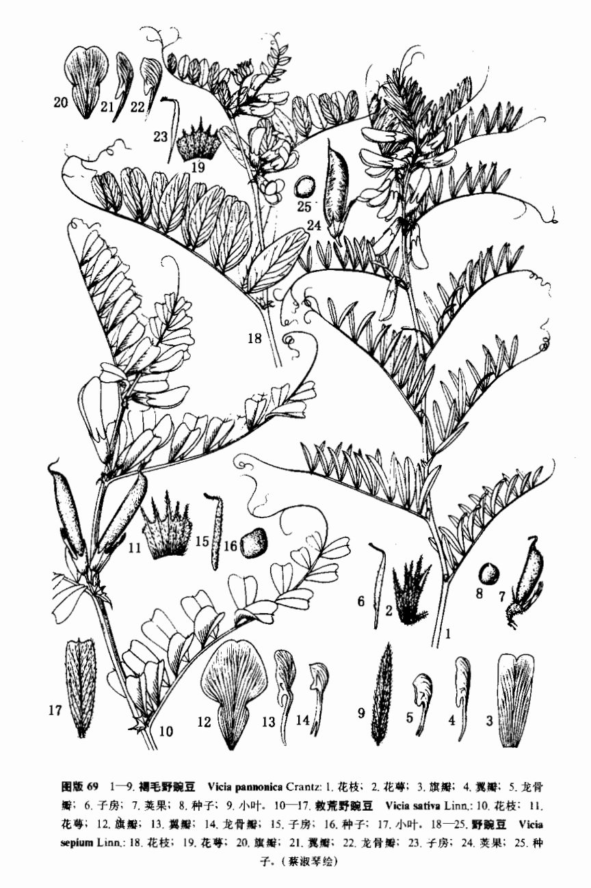

出现篇目
古代记载 《毛诗故训传》
薇，菜也。（《毛传》注《草虫》）
薇，菜。（《毛传》注《采薇》）
《毛诗草木鸟兽虫鱼疏》
薇，山菜也，茎叶皆似小豆，蔓生。其味亦如小豆，藿可作羹，亦可生食。今官园种之，以供宗庙祭祀。
《毛诗正义》
陆机云：“山菜也，茎叶皆似小豆，蔓生。其味亦如小豆。藿可作羹，亦可生食。今官园种之，以供宗庙祭祀。（《毛诗正义》疏《草虫》）
《诗集传》
薇、似蕨而差大。有芒而味苦。山閒人食之。謂之迷蕨。胡氏曰、疑卽莊子所謂迷陽者。（《诗集传》集注《草虫》)
《本草纲目》
藏器曰∶薇生水旁，叶似萍，蒸食利人。《三秦记》云∶夷齐食之三年，颜多不异。武王诫之，不食而死。 李珣曰∶薇生海、池、泽中，水菜也。 时珍曰∶薇生麦田中，原泽亦有，故《诗》云∶“山有蕨、薇”，非水草也。即今野豌豆，蜀入谓之巢菜。蔓生，茎叶气味皆似豌豆，其藿作蔬、入羹皆宜。《诗》云∶采薇采薇，薇亦柔止。《礼记》云∶ 豕以薇。皆此物也。《诗疏》以为迷蕨，郑氏《通志》以为金樱芽，皆谬矣。项氏云∶巢菜有大、小二种∶大者即薇，乃野豌豆之不实者，小者即苏东坡所谓元修菜也。此说得之。
当代记载 《中国植物志》
救荒野豌豆（Vicia sativa L.）是豆科，野豌豆属一年生或二年生草本植物，高可达105 厘米。茎具棱，被微柔毛。叶轴顶端卷须；托叶戟形，小叶片长椭圆形或近心形，先端圆或平截有凹，侧脉不甚明显，花 腋生，近无梗；萼钟形，萼齿披针形或锥形；花冠紫红色或红色，旗瓣长倒卵圆形，翼瓣短于旗瓣，子房线形，子房具柄短，荚果线长圆形，果瓣扭曲。种子圆球形，棕色或黑褐色，4-7月开花，7-9月结果。 原产欧洲南部、亚洲西部，中国各地均有分布。广为栽培。生长在海拔50-3000米荒山、田边草丛及林中。

<中国植物志>